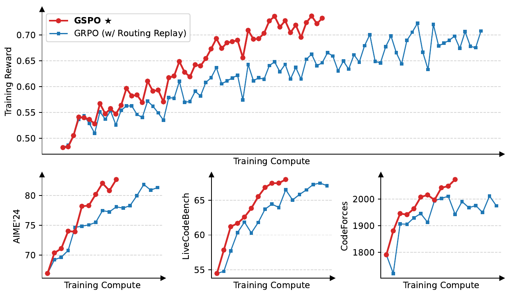
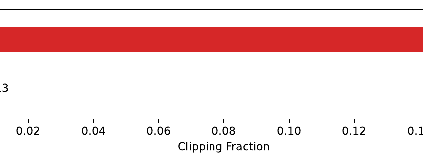
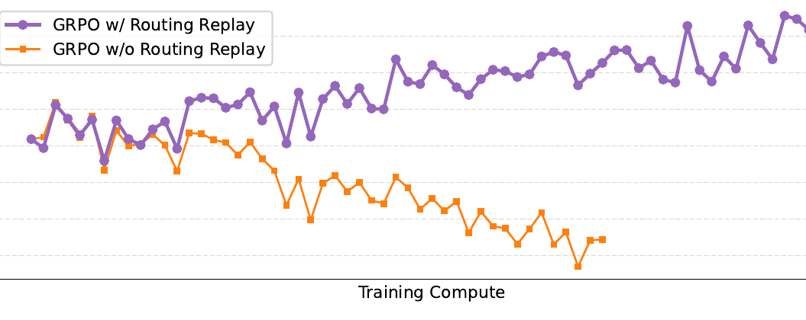

FULL NOTE · 强化学习与对齐
GSPO
Group Sequence Policy Optimization
一句话本质：GSPO 把强化学习策略比率与裁剪边界从逐 Token 提升到整条序列的长度归一化似然，消除优化与奖励的粒度错位，使 MoE 与长推理 RL 训练无需 Routing Replay 即可稳定收敛。
五分钟重建
GRPO 将整道题的结果奖励与逐 token 策略比率和逐 token 裁剪绑定。长序列各 token 比率波动撕裂完整证明，MoE 路由轻微跳变更会引发梯度爆炸，迫使系统使用沉重的 Routing Replay 补丁。GSPO 将重要性采样与裁剪统一提升到序列级别。
序列级似然比
计算整条回答在当前策略与旧策略下的联合概率比，并按序列长度取几何平均（1/|y_i| 指数次方），使比率稳定维持在 1.0 附近。
序列级全局裁剪
在序列重要性比率上施加 [1-ε, 1+ε] 裁剪，由组内相对优势驱动整条序列协同更新，不再逐字撕裂。
平滑更新免回放
单个 token 的专家路由变动被全序列几何平均自然稀释，MoE 训练无需保存和回放旧路由即可平稳收敛。
具体例子（教学假设）：一条 2000 token 的解题回答，新旧策略下各 token 的 log 概率差均值为 0.001。整条序列连乘概率比为 exp(2) ≈ 7.39（严重失真），但经长度归一化后比率为 exp(0.001) ≈ 1.001，平稳落在裁剪区间内；序列内每个 token 分配到一致且平滑的更新尺度。
边界：GSPO 假设外部奖励仅在序列生成完毕后提供（Outcome Reward）。若存在可靠的密集过程奖励（PRM），序列级平摊会稀释步级精准信用分配；此外短文本或单步决策任务中相比 GRPO 收益有限。
换个条件看机制
如果解题过程有 2000 个 token，前 1990 个 token 严密正确，最后 10 个 token 算错导致全题得负奖，GSPO 会如何更新？
前 1990 个 token 同样会接受负优势更新。但在无单步过程标签的前提下，GRPO 赋予 token 的不同比率只是采样漂移而非真实因果归因；GSPO 消除伪方差换取全局训练稳定性，是工程上完全可接受的妥协。
2026-10-29：讲解与练习待试用，本次未进行理解检验；此处不记录复测通过。
论文图解



解决什么问题
在长思维链大模型强化学习（如 DeepSeek-R1、Qwen 系列）中，GRPO 虽通过组内相对优势比较剔除了独立 Critic 价值网络，却直接继承了源自 PPO 的逐 token 重要性比率与逐 token 裁剪机制，引发两大系统性暗礁：
- 奖励与优化的粒度错位（Unit Mismatch）与长链条方差爆炸：
- 外部评估（数学对错、代码测例）是序列级标量奖励（Outcome Reward），算法无法获知每个 token 的真实因果贡献；
- GRPO 强行在每个 token 上独立计算重要性比率 $r_{i,t} = \frac{\pi_\theta(y_{i,t})}{\pi_{\text{old}}(y_{i,t})}$ 并独立执行 $[1-\varepsilon, 1+\varepsilon]$ 裁剪；
- 在长达数千 token 的推导中，整条本该协同强化的正确解题过程，部分 token 满足比率被放大，部分 token 越过阈值被强行截断为 0 梯度，导致连贯的思维链被撕裂。累计梯度方差随生成长度激增，容易诱发不可逆的灾难性模型崩溃（Model Collapse）。
- MoE 模型的稀疏路由地震与沉重的工程包袱：
- 在混合专家（MoE）模型中，每个 token 由门控路由分配给 Top-K 专家；
- 训练步轻微更新后，某些 token 激活的专家组合发生变动，导致单 token 条件概率剧烈跳跃，使得 token 级比率 $r_t$ 瞬间飞出正常区间甚至溢出；
- 过去为了维系 MoE 的 GRPO 训练收敛，业界被迫引入 Routing Replay（路由回放）：Rollout 采样时必须在显存中缓存每一层、每个 token 的激活专家索引，训练前向传播时强行劫持 Router 注入旧专家。这造成了极其庞大的显存占用、分布式跨集群通信延迟与脆弱的底层算子侵入。
大白话讲解
类比：合力做大题与拔河比赛
把模型的长思维链推理比作一个班级齐心协力解出一道压轴奥数题：
- GRPO 的做法：老师给整道题打了满分（序列级奖励 $\widehat{A} > 0$）。但发奖励时，主任拿着放大镜去给每个人的「呼吸频率」算系数——谁呼吸稍微急促了一点就当场扇一巴掌让他闭嘴（Token 级裁剪截断梯度）；谁呼吸平缓就硬拉着往前拽。一条完整严密的证明被切成了无数段碎肉，队员互相绊倒，全班当场散伙。
- GSPO 的做法：主任只看整班人交出来的试卷总体倾向相比草稿调整了多少（整篇序列似然取几何平均）。只要整篇文章的方向可控，所有队员共享平滑、同步的奖励；若整篇跑偏过远，则全篇统一减速。整篇逻辑骨架保持完整，方差自然消失。
在 MoE 架构中，就像班里有 64 位不同学科的专家辅导员。GRPO 因为单字微观挑刺，一旦门卫把某个字的辅导员换成了另一个人，该字的比率就会爆发大地震；而 GSPO 关注整篇作文的宏观质量，个别专家的微调被全篇数千字平滑稀释，根本不需要花重金雇佣监工（Routing Replay）强行规定谁辅导哪个字。
关键机制
1. 长度归一化的序列重要性比率（Length-Normalized Sequence Ratio）
GSPO 将重要性采样比率定义在整条候选序列 $y_i$ 的联合概率上，并通过序列长度 $|y_i|$ 取几何平均：
$$s_i(\theta) = \left[ \frac{\pi_\theta(y_i \mid x)}{\pi_{\theta_{\text{old}}}(y_i \mid x)} \right]^{\frac{1}{|y_i|}} = \exp\left( \frac{1}{|y_i|} \sum_{t=1}^{|y_i|} \log \frac{\pi_\theta(y_{i,t} \mid x, y_{i,<t})}{\pi_{\theta_{\text{old}}}(y_{i,t} \mid x, y_{i,<t})} \right)$$
- 数值稳定性保障：若直接计算联合概率比的连乘 $\prod_{t=1}^{|y_i|} r_{i,t}$，数千步的概率积在浮点精度下必然下溢至 0 或极端爆炸；通过取 $\frac{1}{|y_i|}$ 次方（即 log-ratio 算术平均后再指数化），$s_i(\theta)$ 在不同生成长度下均稳定居中在 1.0 附近。
2. 序列级裁剪代理目标（Sequence-level Clipped Objective）
将裁剪限制在整条序列的全局标量比率 $s_i(\theta)$ 上：
$$\mathcal{J}_{\text{GSPO}}(\theta) = \mathbb{E}_{x \sim \mathcal{D},\, \{y_i\}_{i=1}^G \sim \pi_{\theta_{\text{old}}}}\left[ \frac{1}{G} \sum_{i=1}^G \min\left( s_i(\theta)\widehat{A}_i, \; \text{clip}\left(s_i(\theta), \, 1 - \varepsilon, \, 1 + \varepsilon\right)\widehat{A}_i \right) \right]$$
其中 $\widehat{A}_i$ 沿用组内相对标准化优势：$\widehat{A}_i = \frac{R_i - \text{mean}(R)}{\text{std}(R)}$。
3. 梯度展开与序列内同频更新
对未触发裁剪的序列求梯度：
$$\nabla_\theta \mathcal{J}_{\text{GSPO}} = \frac{1}{G} \sum_{i=1}^G \widehat{A}_i \cdot s_i(\theta) \cdot \frac{1}{|y_i|} \sum_{t=1}^{|y_i|} \nabla_\theta \log \pi_\theta(y_{i,t} \mid x, y_{i,<t})$$
- 在反向传播时，序列 $y_i$ 内每一个 token 共享统一的缩放因子 $\frac{\widehat{A}_i \cdot s_i(\theta)}{|y_i|}$，消除了局部 token 梯度非均匀裁剪造成的语义扭曲；
- 只有当整条序列偏离旧策略过远时，裁剪才一次性踩刹车，保护完整逻辑链路。
4. 彻底抛弃 Routing Replay
在 48 层的 Qwen3-30B-A3B-Base 中，一次更新后约 10% 的 token 会路由到不同专家。在 GSPO 下，序列似然的宏观平滑性抵抗了微观专家路径震荡，系统无需在显存中缓存路由索引，节省数 GB 显存与繁重的跨集群 All-to-All 路由通信。
5. 解耦推理与训练重算（RL Infrastructure 简化）
由于训练引擎（Megatron）与推理引擎（vLLM / SGLang）之间存在底层算子浮点差异，GRPO 必须在训练端重新前向跑一遍旧策略以消除单 token 误差。GSPO 对单 token 精度差异容忍度高，可直接复用推理引擎产出的序列似然，在分布式训练架构下进一步提升吞吐。
结果与代价
- 实测性能：在 Qwen3-30B-A3B-Base 冷启动模型上，GSPO 在 AIME'24、LiveCodeBench 和 CodeForces 全面超越带 Routing Replay 的 GRPO 基线；直接赋能了 Qwen3 全系模型的强化学习扩展。
- 反直觉发现（Figure 2）：GSPO 裁剪掉的 token 总量比 GRPO 高两个数量级（15% vs 0.13%），却在消耗更少有效 token 的情况下达成更高效率，实证了 GRPO 未裁剪 token 梯度的虚假方差破坏性。
- 代价与局限：
- 牺牲了理想状态下的步骤级因果归因（但该因果在结果奖励体系下本就是伪命题）；
- 若未来引入高精度过程奖励模型（PRM），序列级统一缩放需要针对步级奖励进行拓展重构；
- 短序列或单步动作任务中，相比 GRPO 的稳定性增益减弱。
AI 预读备注
- 底稿来源：Zotero AI Butler 子笔记
JS69TIZA（task=summary）与VEEZCGDC（task=table）。 - 预读要点确认：AI Butler 准确指出了「序列级似然定义比率」与「稳定 MoE 避免 Routing Replay」，但未透彻解释几何平均在数学上防止长序列浮点下溢的机制，亦未点出 Figure 2「裁剪比例高两阶却更高效」的反直觉因果。本篇费曼讲解予以深化补齐。
我的复述
XinLi 费曼检验原话记录（2026-10-29）：
- 针对长序列连乘数值崩溃：
"会导致乘积接近0甚至下溢到精度外变成0， GSPO 取 1/|y_i|指数次方，取几何平均，比率会落在1.0附近"
- 针对 MoE 路由跳变与免回放机制：
"因为 MoE 模型更新后可能会被路由到新的专家导致分布大范围波动，触发梯度裁剪等操作；GSPO 取的是整个序列的平均序列比率，个别路由波动可以被平均抵消。"
- 针对前序正确步骤平摊负奖励的权衡：
"由于 GSPO 是采用平均序列比例，所以前面的 token 会获得正常幅度的更新负奖励，这是可接受的妥协，因为GRPO 赋予各个 token 的不同更新幅度也不是真正的因果归因。"
卡壳点与解答
Q1：为什么说 Routing Replay 是高开销的工程包袱？
- 显存膨胀：MoE 深度可达 48~64 层，每层每个 token 都要保存 Top-K 专家索引。在长推理与大批次下，整套路由缓存占用数 GB 到数十 GB 显存，极度挤占上下文长度。
- 通信与序列化延迟：Rollout 推理集群与 Trainer 训练集群分离时，必须跨节点打包并传输整套庞大的路由张量，拖慢端到端迭代流水线。
- 算子侵入脆弱：需要在推理引擎与训练框架的底层 MoE 算子中强行打补丁拦截 Router 计算，系统升级维护代价极高。
Q2：GRPO 的 Token 级方差缺陷到底指的是什么？
- 奖励与惩罚的错位：外部裁判只看整篇证明做对做错发一份总奖金（序列级奖励），GRPO 却把几千个单词拆成独立小人各自算比率。
- 思维链被撕裂：因为单 token 裁剪，导致同一条证明里有的词在猛冲、有的词被踩刹车归零。连贯推导被切碎，梯度忽大忽小乱晃，最终造成模型崩溃。
- GSPO 的解决本质：取消单字弹簧，整篇求几何平均似然比。要奖全篇一起奖，要刹全篇一起刹，方差自然消除。
还没搞懂
- 当引入可靠的密集过程奖励模型（PRM）时，如何将 GSPO 的几何平均序列比率与步骤级边界自然融合，既保留抗 MoE 路由扰动的平滑性，又实现精准的步骤信用分配？（已同步至 questions.md）
关联
- PPO — 奠定了裁剪代理目标（Clipped Surrogate）与信任域优化范式，GSPO 将其单步裁剪拓展为序列级裁剪。
- DeepSeekMath — 提出了 GRPO 组相对优势估计，GSPO 继承其去 Critic 的组比较架构并修复其 Token 级方差缺陷。
- DAPO — 同样针对长思维链 RL 的稳定性瓶颈，DAPO 采用不对称 Clip-Higher 与 Token-level loss weight 启发式调优，GSPO 则在数学粒度上更彻底地重塑为序列似然比。